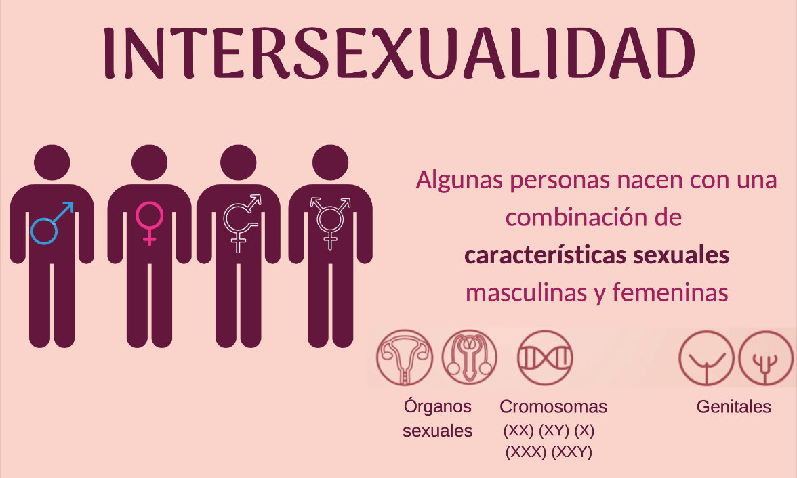

<!DOCTYPE html>
<html lang="es">
  <head>
    <meta charset="UTF-8">
    <meta http-equiv="X-UA-Compatible" content="IE=edge">
    <meta name="viewport" content="width=device-width, initial-scale=1.0">
    <title>LGBTIQ</title><link href="https://cdn.jsdelivr.net/npm/bootstrap@5.1.3/dist/css/bootstrap.min.css" rel="stylesheet" integrity="sha384-1BmE4kWBq78iYhFldvKuhfTAU6auU8tT94WrHftjDbrCEXSU1oBoqyl2QvZ6jIW3" crossorigin="anonymous">
<script src="js/jquery.min.js"></script>
<script src="js/popper.min.js"></script>
<script src="js/bootstrap.min.js"></script>
<script src="js/main.js" type="module"></script>
<link rel="stylesheet" href="css/styles.css">
<link rel="stylesheet" href="css/boxes.css">
  </head>
</html>
<body> 
  <nav class="navbar navbar-expand-lg navbar-light bg-darkm">
<div class="container-fluid">
<a class="navbar-brand" href="#">LGBTIQ+</a>
<button class="navbar-toggler" type="button" data-bs-toggle="collapse" data-bs-target="#navbarSupportedContent" aria-controls="navbarSupportedContent" aria-expanded="false" aria-label="Toggle navigation">
<span class="navbar-toggler-icon"></span>
</button>
<div class="collapse navbar-collapse" id="navbarSupportedContent">
<ul class="navbar-nav me-auto mb-2 mb-lg-0">
<li class="nav-item">
<a class="nav-link active" aria-current="page" href="inicio.html">Inicio</a>
</li>
<li class="nav-item">
<a class="nav-link" href="orientacion.html">orientacion sexual</a>
</li>
<li class="nav-item">
<a class="nav-link" href="generos.html">Generos</a>
</li>
<li class="nav-item dropdown">
<a class="nav-link dropdown-toggle" href="#" id="navbarDropdown" role="button" data-bs-toggle="dropdown" aria-expanded="false">tipos de generos</a>
<ul class="dropdown-menu" aria-labelledby="navbarDropdown">
<li><a class="dropdown-item" href="homosexual.html">homosexual</a></li>
<li><a class="dropdown-item" href="heterosexual.html">heterosexual</a></li>
<li><a class="dropdown-item" href="bisexual.html">bisexual</a></li>
<li><a class="dropdown-item" href="lesbiana.html">Lesbiana</a></li>
<li><a class="dropdown-item" href="transgenero.html">Transgenero</a></li>
<li><a class="dropdown-item" href="intersexo.html">intersexo</a></li>
</ul>
</li>
<li class="nav-item">
<a class="nav-link " href="identidad.html" tabindex="-1" aria-disabled="true">identidad de genero</a>
</li>
<li class="nav-item">
<a class="nav-link " href="homofobia.html" tabindex="-1" aria-disabled="true">homofobia</a>
</li>
</ul>
<input class="form-control me-2" id="search" type="search" autocomplete="off" placeholder="Buscar" aria-label="Search">
<section id="search-results">
</section>
</div>
</div>
</nav>
  <section class="article">
    <h1>¿Qué es el intersexo?</h1>
    <p>El intersexo es un término general que agrupa numerosas variaciones corporales naturales de las carac<wbr/>erísticas sexuales, entre las que se incluyen la anatomía reproductiva, las hormonas o los     patrones cromosómicos que difieren de las definiciones habituales de cuerpos de hombre y de mujer. Estas variaciones pueden ser visibles al nacer, desarrollarse en la pubertad o no     manifestarse externamente. Debido a que sus cuerpos son considerados distintos, las perso- nas intersexuales se enfrentan al estigma y a la violación de sus Derechos Humanos.</p>
    <h5>¿Cuando se determina a un bebe intersexual?</h5>
    <p>Les niñes intersexuales, pueden ser sometidos a una cirugía para adaptar sus cuerpos a las expectativas de un cuerpo masculino o femenino. Tenga presente que este tipo de       intervenciones quirúrgicas practicadas a lactantes, no pueden basarse en un consentimiento informado por definición. Esto implica que un bebé no puede elegir si desea someterse       o no a la cirugía. Estos procedimientos, con frecuencia irreversibles, pueden provocar esterilidad permanente, pérdida de sensación sexual, dolor, incontinencia y sufrimiento mental      para toda la vida, incluida la depresión.</p>
    <h5>¿Por qué evitar confundir la itersexualidad con un trastorno medico?</h5>
    <p>La intersexualidad describe unas características sexuales físicas y biológicas, no una patología. La intersexualidad, como sexo biológico, es siempre congénita (está presente desde el nacimiento) y puede deberse a numerosas variaciones genéticas, cromosómicas u hormonales. Con frecuencia se considera que las personas intersexuales padecen una patología, o se les observa desde una perspectiva médica, debido a sus características biológicas       distintivas.</p>
  </section>
</body>